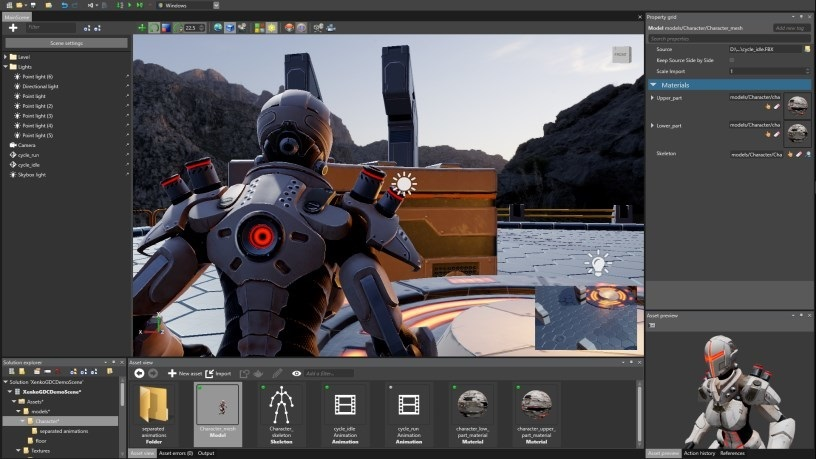

Stride 4.0 マニュアル

オープンソースの C# ゲームエンジンである Stride の使用方法について紹介します。
Note
Stride のマニュアルは現在作成中であり、定期的に新しい内容に更新されています。ドキュメントの更新については、Twitter の Stride アカウントをフォローしてください。
最新のドキュメント
New パッケージング（NuGet）
New ビデオ
New キャッシュされたファイル
New iOS
New シェーダーのコンパイル
Updated スカイボックスと背景
Updated モデルファイルを使ったカメラのアニメーション
Updated マテリアル スロット
ドキュメントの改善について
Stride のドキュメントはオープンソースであり、誰でも編集できます。もし間違いを見つけたら、修正もしくは GitHub までコメントをお願いします。